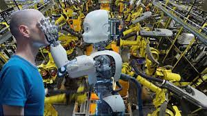
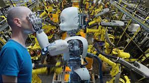
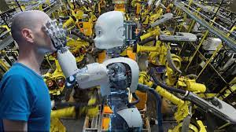
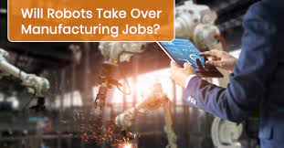

Robots are any automatically operated machine that replaces human effort,though it may not resemble human beings in appearance or perfom function in a humanlike manner .It was shown that robots are taking over peoples jobs .It is predicted that robots will replace more human workers in the future.Acoording to scietist,automation is expected to affect human work.The high accurancy and ROUND-THE-CLOCK availability make them more dependeble for work.Robots will replace 40% of jobs in the next 15 years.And ths will lead to high unemployment rate in our society.

There is an advantage of that if robots takes the humans labour.Work will be done in a short period of time....No equipments will be stolen and nothing will go missing.Robots will don't get distracted or need to take breaks.Work will be done well,Which will lead to happier employees
Many jobs have become easier by being replaced to robots.Robots are not just an idea of talking mecanichal parts as we see in futuristic movies.There are a variety of different types of robotic machines,great majority of them appear in factories and in science technology work fields.Robots in factories help replace a dangerous part of a job.However,there have been a different perspective with replacing jobs....Robotic replacement might not have a negative effect,especially since it has helped our development to be able to survive.when they start to replace our jobs,the jobs that we have today will be gone.A major part of the question would be WHERE ARE PEOPLE GOING TO FIND AN INCOME TO PROVIDE FOR THEIR FAMILIES??????? Lower classes of people would bewould not be able to obtain jobs untroublesome ,due to thev level of education they obtain.Even if jobs are recycled and robots have countless of other benefits.there will still be a large number of people who will havev trouble finding new jobs after losing their previous one,However there are different solution to improve robotic replacement.There are more advantages to robotic replacement.the only disadvantage will be for the lower level jobs